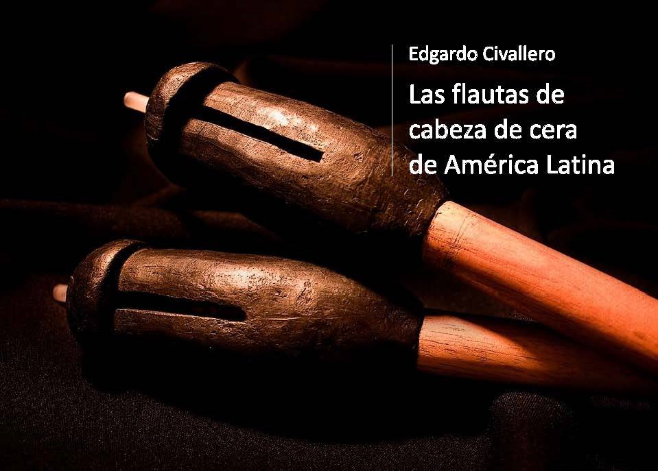

Las flautas de cabeza de cera de América Latina
Inicio > Libros digitales sobre música. Serie 1 > Las flautas de cabeza de cera de América Latina
Cómo citar este trabajo: Civallero, Edgardo (2025). Las flautas de cabeza de cera de América Latina. Edición de archivo. Bogotá: El Zorro de Abajo Editora.
Primera edición, 2015. Edición revisada, 2021 (Wayrachaki Editora). Edición de archivo, 2025 (El Zorro de Abajo Editora).
Descargar en PDF.
Este libro presenta un estudio comparativo de una familia de aerófonos poco documentada, cuya distribución abarca el área circumcaribe y parte de Mesoamérica. A través de fuentes arqueológicas, etnográficas y musicales, se reconstruye el origen, la evolución y las transformaciones de estas flautas —también llamadas "flautas-hacha"— desde sus antecedentes prehispánicos hasta sus manifestaciones contemporáneas en Colombia, Venezuela, Panamá y México.
Los instrumentos se definen como aerófonos de aeroducto externo con cabezal modelado en cera endurecida con carbón vegetal. El cuerpo, generalmente de caña o madera, mide entre 40 y 90 centímetros, y presenta entre uno y cinco orificios de digitación frontales. Algunos ejemplares incluyen un pequeño cilindro de cera con una membrana vibrante —una suerte de mirlitón— que confiere al sonido un zumbido característico. Las flautas suelen tocarse en pares, una "hembra" de varios orificios que ejecuta la línea melódica y un "macho" con un solo orificio que actúa como bordón, acompañadas por maracas y tambores.
El texto examina la amplia presencia de estos instrumentos en el norte de Sudamérica, destacando su papel en la génesis de las actuales gaitas colombianas. Las crónicas coloniales del siglo XVI ya registraban su uso entre los pueblos Malibú y Chimila de la Sierra Nevada de Santa Marta. Los grupos Kogui, Wiwa, Ika y Kankuamo continúan ejecutando flautas de este tipo, conocidas como kuizi, watko o cháro, junto con maracas de totumo. En el contexto ceremonial, las flautas macho y hembra representan principios complementarios de género y fertilidad. Con el desplazamiento forzado de comunidades durante el siglo XVIII, este modelo organológico se difundió hacia los Montes de María y se integró en la cultura afrocriolla, dando origen al conjunto de gaitas de San Jacinto.
En Venezuela, se estudia la permanencia de las flautas de cabeza de cera entre los Yukpa de la Sierra de Perijá. La
La obra se desplaza luego hacia Centroamérica, donde registra la continuidad del modelo en las comunidades Kuna o Tule de Panamá, con flautas tolo y supe ejecutadas en parejas durante danzas rituales. En México, las variantes se multiplican: entre los Pame (San Luis Potosí), la nipil'ji o flauta de hoja se usa en la Danza del Mitote, ofrenda agrícola a los espíritus del agua y la tierra; entre los Tének o Huastecos, la pakaab chul acompaña el nukub tzon o Danza del Trueno; y entre los Nahua del norte de Veracruz e Hidalgo, flautas semejantes intervienen en ceremonias sincréticas como el Toro encalado. En todas ellas se repite la estructura esencial: cuerpo de caña, cabezal de cera, aeroducto de pluma y membrana de telaraña, síntesis técnica que une el soplo, la materia viva y la vibración como principio ritual.
Desde su origen en el área chibcha hasta su supervivencia en la Huasteca mexicana, el instrumento ha mantenido un principio técnico constante —la modelación del aire mediante cera— que le otorga una identidad acústica y simbólica única. Su evolución ilustra procesos de resistencia cultural, continuidad tecnológica y resemantización ritual a lo largo de cinco siglos.